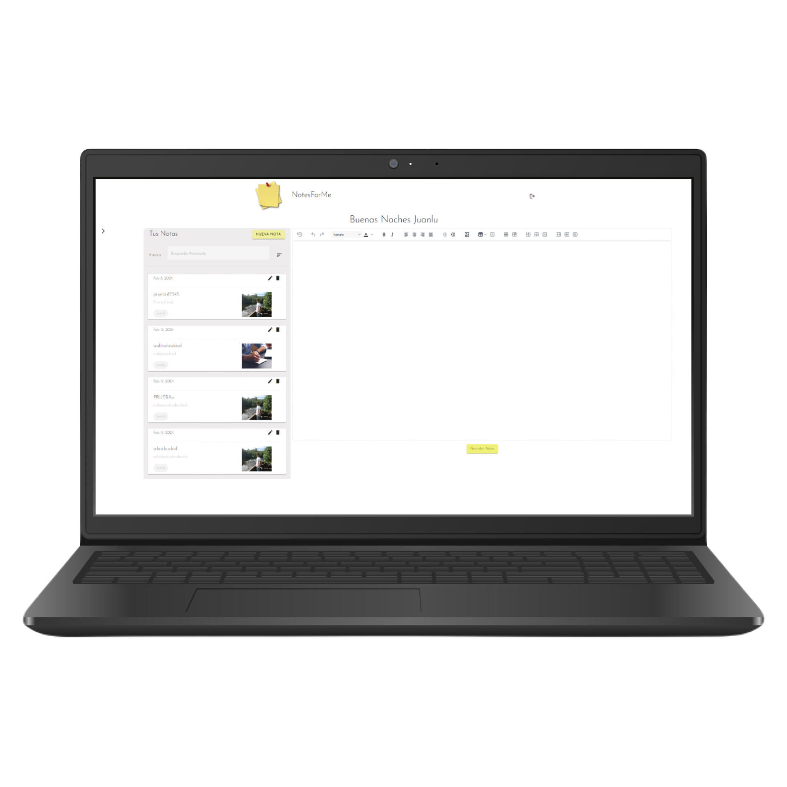

image
INSERCCIÓN IMÁGENES
Funcionalidad para agregar elementos visuales para complementar sus contenidos
escritos, con las imagenes los usuarios enriquecen sus notas.
find_in_page
BUSQUEDA AVANZADA
Mejora la eficiencia al permitir una recuperación rápida y precisa de
información
dentro de una amplia colección de notas, introduciendo palabras claves
restore_from_trash
SISTEMA DE BORRADO
Ofrecemmos a los usuarios la capacidad de eliminar notas de manera temporal,
almacenándolas temporalmente, en un área.
verified_user
SEGURIDAD
Garantizamos la protección de la información personal y confidencial mediante el
uso de medidas como el cifrado de datos y autenticación de usuarios
La aplicación
Una aplicación de notas intuitiva que permite crear, editar y eliminar notas fácilmente, incluyendo la opción de insertar imágenes . Ofrece funciones de recuperación y ordenación de notas , además de una búsqueda avanzada basada en palabras clave para encontrar notas rápidamente por sus descripciones.
